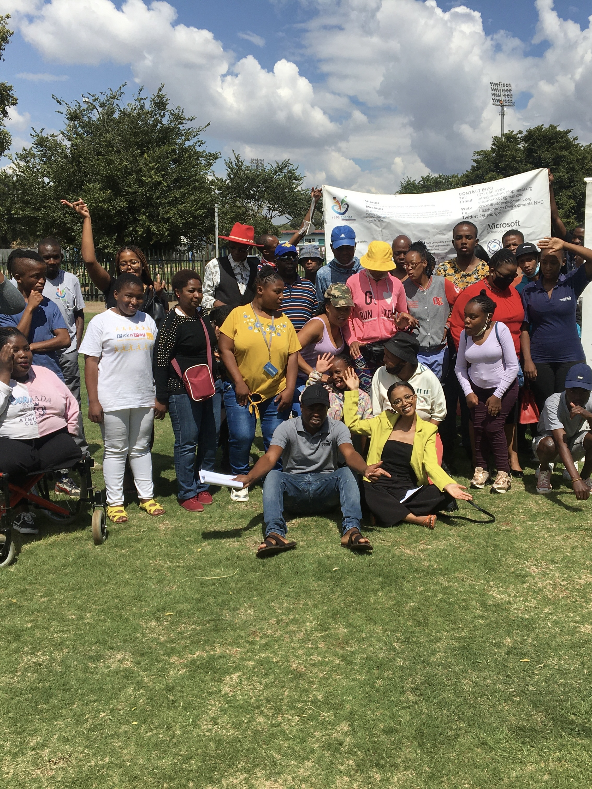

Our Empowerment Events
At She Leads, our empowerment events are dynamic and transformative experiences developed to inspire and uplift young African women. Through a series of carefully curated seminars, workshops, and conferences, we provide a platform for learning, networking, and personal growth. Our events cover a wide range of topics, from leadership skills and career development to self-care and mental health. We believe in creating spaces where participants can engage in meaningful discussions, share experiences, and gain valuable insights from accomplished speakers and mentors.Upcoming Events:

Shoe Drive:It took one pair to change Cinderella life.

Diepsloot Community Outreach:She Leads helps a leaner become a student against all odds.
